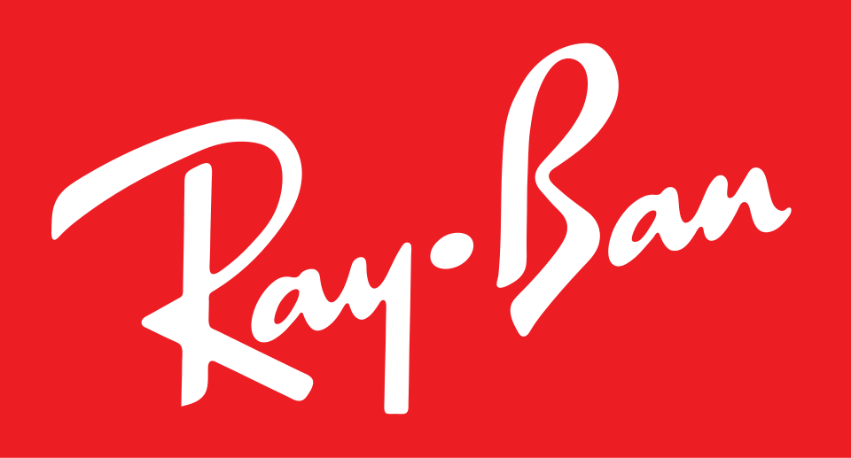
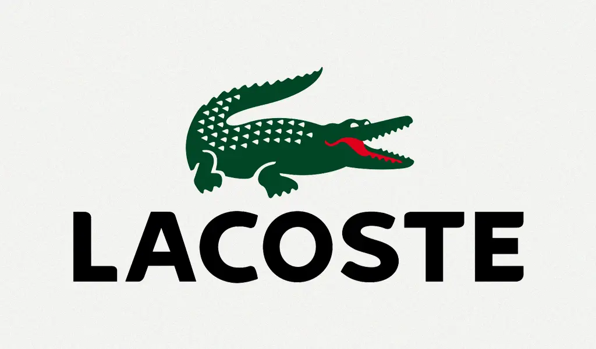
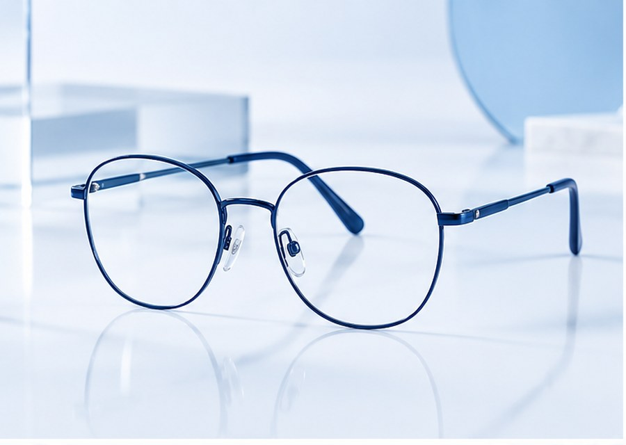

Análise de rosto e uso
Entendemos formato, medidas, prescrição e rotina para indicar armações confortáveis e lentes coerentes.
Lentes, armações e acompanhamento visual para quem quer enxergar melhor, escolher com segurança e sair com uma solução que combina com o rosto, a rotina e o estilo.
Entendemos formato, medidas, prescrição e rotina para indicar armações confortáveis e lentes coerentes.
Antirreflexo, proteção UV, filtros para telas, fotossensíveis e soluções para dirigir, estudar ou trabalhar.
Ajustes, limpeza, orientação de uso e relacionamento contínuo para manter conforto e qualidade visual.
A Óticas Fascinantes atende quem precisa renovar o grau, encontrar uma armação marcante, proteger os olhos no dia a dia ou entender melhor qual lente faz sentido para sua rotina.
Recebemos a receita, ouvimos as necessidades e conferimos medidas importantes.
Apresentamos opções de lentes, tratamentos e armações com comparação clara.
Finalizamos ajustes, orientamos cuidados e mantemos contato para dúvidas futuras.
Cada escolha passa por conforto, proteção e estilo. A armação certa valoriza o rosto e a lente certa acompanha o seu dia sem pesar.


Uma curadoria com marcas reconhecidas para quem busca design, conforto e presença no visual.

Ray-Ban
Lacoste
Armações de grauModelos discretos para trabalho, estudo e uso prolongado.
 Óculos solares
Óculos solares
Lentes com proteção UV e formatos para diferentes estilos.
 Lentes oftálmicas
Lentes oftálmicas
Tratamentos para telas, direção, leitura e exposição ao sol.
 Design autoral
Design autoral
Cores, acetatos e geometrias para quem quer destacar o olhar.
Conteúdos sobre sinais de troca de óculos, cuidados com lentes, estilos de armação, prevenção visual e novidades ajudam o cliente a voltar mesmo antes de precisar comprar.
Acessar blog